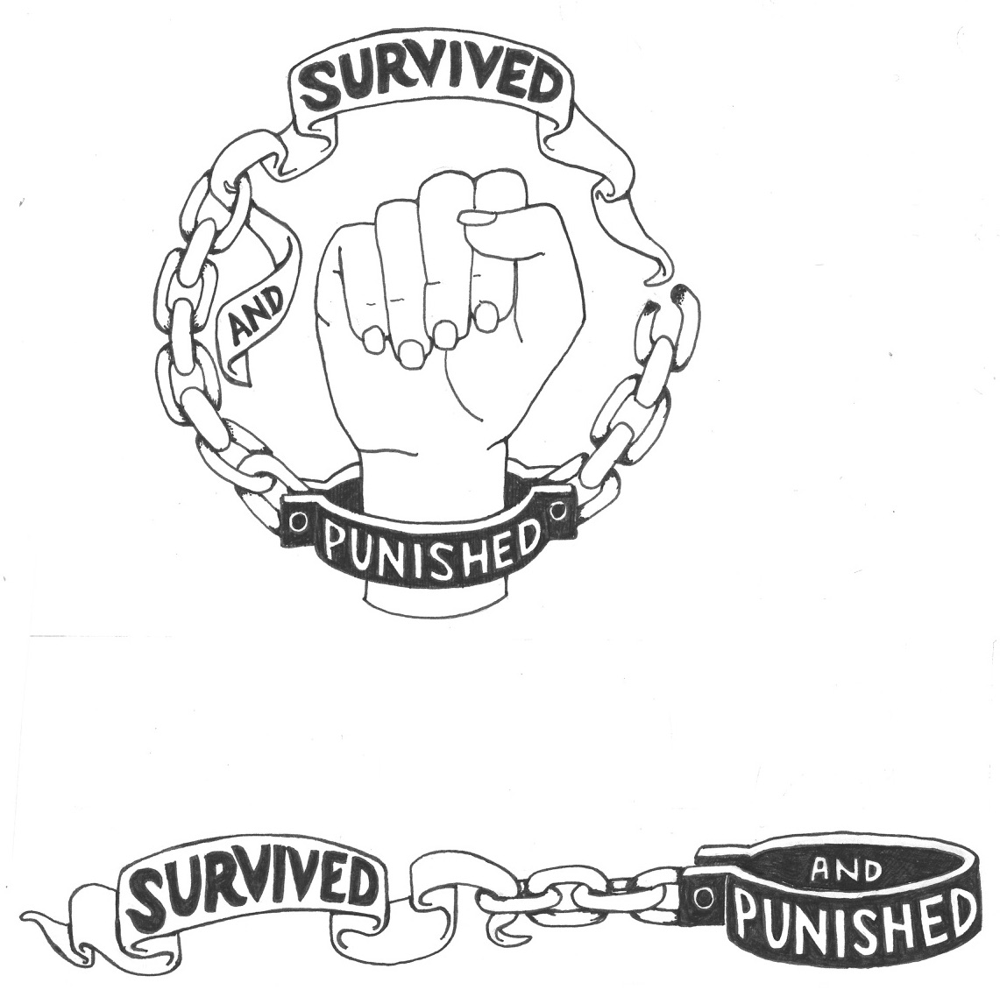
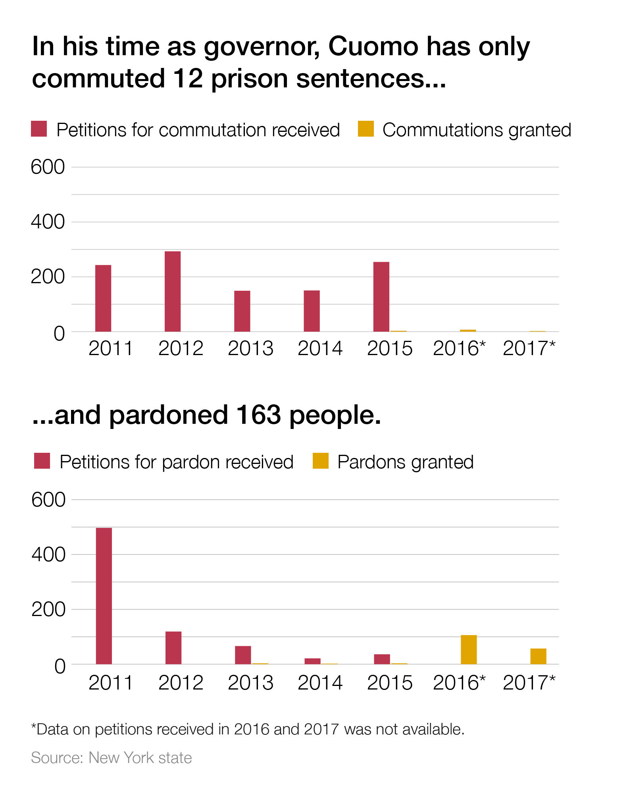
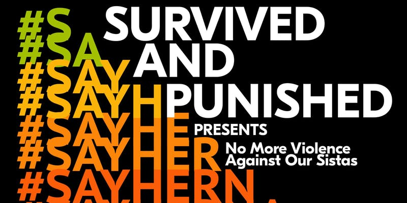
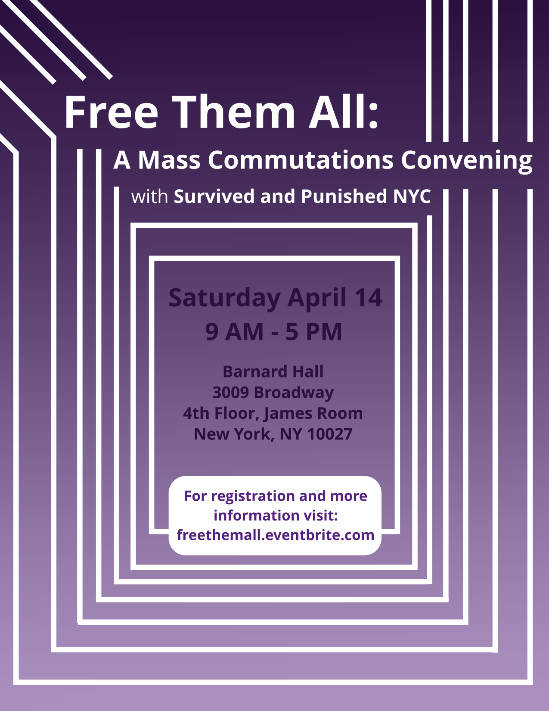

#FreeThemNY
We call on Governor Cuomo to immediately use his clemency powers to free criminalized survivors of gender violence held in prisons in New York.
End the criminalization of survivors of domestic and sexual violence!
Background
Throughout his time in office, Governor Cuomo has granted pardons to just 163 people, and commuted the sentences of only a dozen people.
These numbers are pitifully low compared to the more than 50,000 people held in prisons across New York State.
The New York State Constitution grants the governor power to pardon or commute any sentence, at any time, for any reason. Our campaign calls on Governor Cuomo to use the powers of his office to immediately free criminalized survivors of gender violence!
Upcoming Events
Letter writing to incarcerated survivors of gender violence
Thursday May 31st, 6-8 PM at NYU Department of Social and Cultural Analysis, 20 Cooper Square, Manhattan
No More Violence Against Our Sistas: End Violence Against Black Women and Girls
Wednesday, June 13th, 6-8 PM at Barnard Hall, 3009 Broadway, Room 302

Past Events
Organizing workshop and discussion with Survived and Punished NYC at Bring Down the Walls
Saturday May 19th, 6:30-7:30 PM at Firehouse Engine Company 31, 87 Lafayette Street, Manhattan
April 14th Mass Commutations Convening at Barnard 